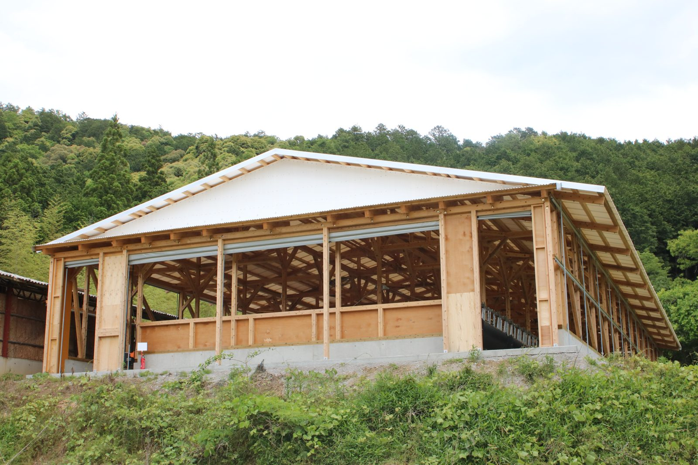
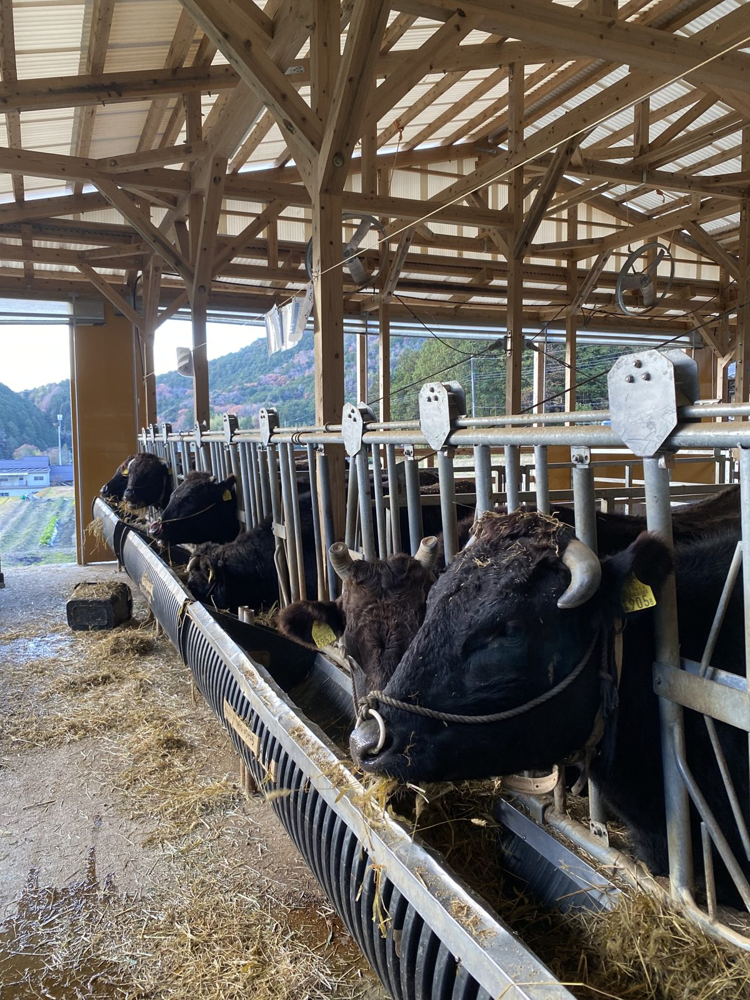
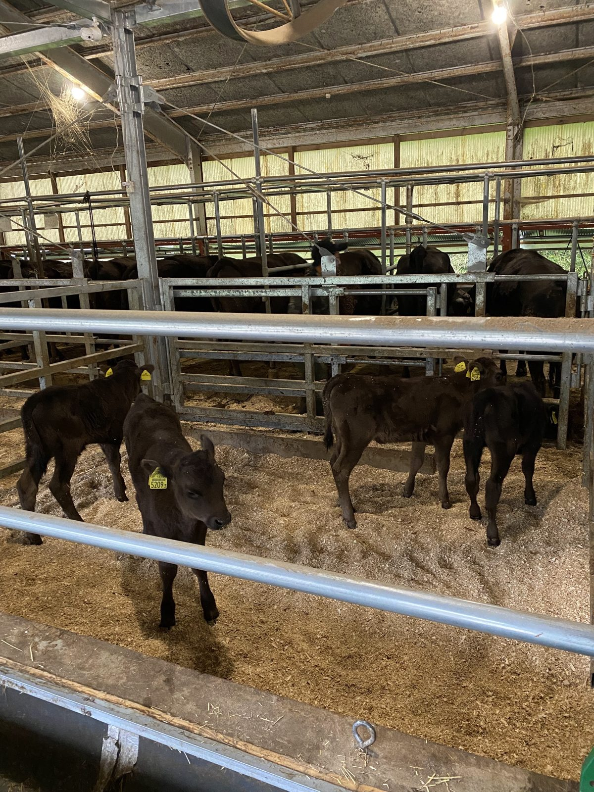
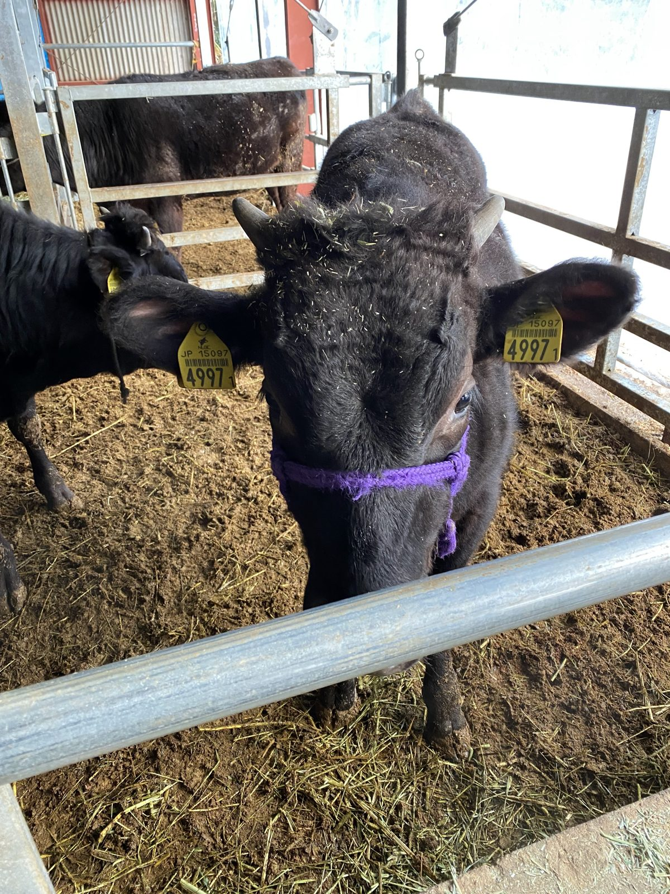

私たちは母牛65頭の但馬牛の繁殖農家です。生まれた子牛を約9か月育て、毎月の但馬家畜市場のセリへ送り出しています。
子牛は早く乳離れさせず、できるだけ母牛の乳で育てます。最初にしっかり免疫をつけることが、病気に強い牛への近道です。
初めてお産をする母牛は、個室でゆったりと。落ち着いてお産に臨めるようにしています。
一頭ずつ、数字で見る。お産、種付け、セリの価格まで、全頭の記録をつけています。どの母牛の子が、市場でどれだけ評価されたか。その結果をもとに、次の種付けと母牛の入れ替えを決めています。
株式会社丹波農商 代表取締役 大塩 敦史
| 年（単位 万円） | 頭数 | 私たちの平均 | 市場の平均 | 差 |
|---|---|---|---|---|
| 2021年 | 12頭 | 82.7 | 82.1 | +0.6 |
| 2022年 | 16頭 | 80.4 | 76.3 | +4.0 |
| 2023年 | 25頭 | 83.2 | 77.6 | +5.5 |
| 2024年 | 26頭 | 90.6 | 88.5 | +2.1 |
| 2025年 | 45頭 | 102.2 | 100.2 | +1.9 |
| 2026年（9月まで） | 33頭 | 97.6 | 97.9 | -0.3 |
これまでの157頭のうち93頭が、同じ日のセリの平均（同じ性別）を上回りました。
72軒の肥育農家さんに買っていただいています。
※ 2021年1月〜2026年9月の但馬家畜市場の販売実績（自社の牛の管理記録より）。「市場の平均」は、同じ日のセリに出た同じ性別の子牛の平均価格。母牛の頭数は2026年10月時点。

子牛は早く乳離れさせず、できるだけ母牛の乳で育てます。最初にしっかり免疫をつけることが、病気に強い牛への一番の近道だと考えています。

エサの食べ方、歩き方、目の輝き。毎日こまめに様子を見て、小さな変化にすぐ気づけるように。一頭ずつ記録をつけ、数字でも確かめています。
風が抜け、光が入る牛舎。寝床にはもみ殻と稲わらを敷き、
使い終わったら堆肥になって田畑へ還ります。






地域の耕作放棄地を一枚ずつ開いて、牛のための牧草地にしています。
輸入のエサにたよらず、丹波の草で牛を育てる。牛のふんは堆肥にして田畑へ還し、その田んぼのもみ殻と稲わらが、また牛の寝床になる。私たちの牛は、この循環の真ん中にいます。
私たちの循環型農業について
生まれた子牛は、生後およそ9か月まで私たちの牛舎で育て、但馬家畜市場のセリへ。そこから肥育農家さんのもとで大きくなり、やがて「但馬牛」「神戸ビーフ」として食卓に届きます。
毎月のセリに送り出す子牛は、Instagramでも一頭ずつ紹介しています。2025年は45頭を送り出し、平均価格は102.2万円でした。

耕作放棄地をさらに牧草地へ。地域の草で育つ牛を増やしていきます。

それぞれの持ち味を活かし、毎日ワクワクして仕事に取り組める会社に。良い会社から、良い牛が生まれると信じています。